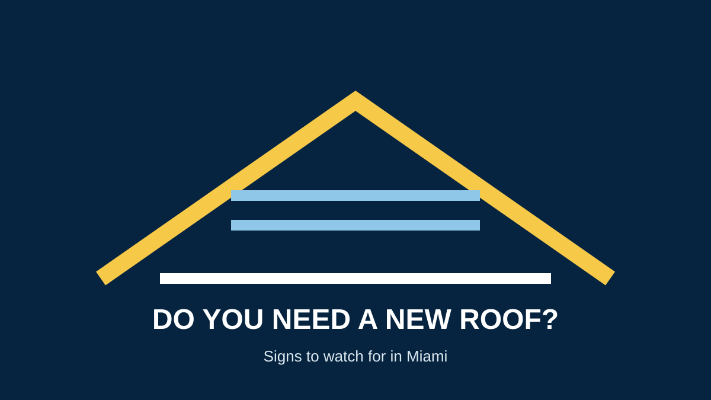

How Do I Know If I Need a New Roof?
If you are searching for the signs you need a new roof, start by separating isolated repairs from widespread or recurring problems. A roof's age matters, but condition and damage matter too.
5 common signs your roof may need replacement
- Recurring leaks: repeated water intrusion can indicate a broader roofing problem.
- Widespread damaged materials: extensive cracking, displacement, curling or missing materials may be more than a single repair.
- Visible deterioration: granule loss, damaged flashing or exposed components can signal aging.
- Storm damage: significant wind or impact damage may require replacement depending on the extent.
- Repeated repair needs: if repairs keep addressing symptoms without solving the underlying problem, compare the long-term replacement option.
What about roof age?
Material life varies. Asphalt shingles commonly have shorter planning lives than tile or metal, but the exact product, installation and exposure matter. Do not replace a roof solely because it has reached a generic age number.
Repair or replacement?
A professional inspection can determine whether damage is localized or widespread. Compare our Miami roof repair service with our roof replacement service.
What homeowners should check safely
- Interior ceiling or wall stains
- Visible missing or damaged roofing materials from the ground
- Debris or granules accumulating around drainage areas
- Recurring leaks after rain
- Visible sagging or structural concerns
Do not climb onto an unstable or steep roof. If there is active water entry or major storm damage, see emergency roof repair.
Frequently asked questions
How long should I wait before replacing an old roof?
Do not rely on age alone. Have the roof condition assessed and compare the cost and expected service life of repair versus replacement.
Can a roof leak be repaired instead?
Often, a localized leak can be repaired. Multiple leaks or widespread deterioration may require a larger solution.
Does storm damage always mean a new roof?
No. The appropriate scope depends on the extent and location of damage and the condition of the existing system.
Request a Roof Inspection →Sources and further reading
Related guides
Roof replacement cost · Roof lifespan in Miami · Roof inspection